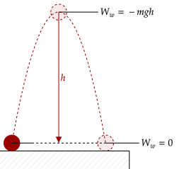
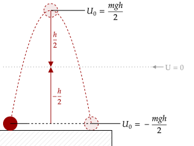

In an interaction, kinetic energy is rarely conserved, unlike momentum which is always conserved. In fact, even for other interactions, like that of a ball falling down, kinetic energy isn't conserved; it changes because the work by the weight of the ball changes the kinetic energy.
However, one thing we could do is add a new term that "counters" this work. In other words, if we add this new term and kinetic energy, they both add to some new term, that we will state will remain constant; thus their change is zero. Let's symbolize this new term with .
Substituting in the value of the change of kinetic energy as the net work done, we have this relation. We use the example of the ball, so the net work on that is done by the weight only.
This peculiar equation shows us that this new term is the negative of the work done on the object. This makes sense with what we wanted to define it as; now, let's flesh out this term. We first break down the equation into its components.
This shows that it is probably important that we set where we what the "final" and "initial" values of this term is. In a concrete example, let's look at the ball falling down.
We note two positions of the ball, one being at its highest point and one at its lowest. At the lowest point, weight can't do any more work as there is no more vertical displacement to be done. At the top, weight can do a lot of work; there's a lot of displacement possible.

Thus, at the top, we can say that weight has a lot of "possible" work that could be done. In other words, it has the potential to do work, unlike at the bottom. This leads us to the name for this new term.
Notice the wording here. Why didn't we let potential energy just be named "stored energy"? One thing to notice with the ball being thrown up is that we are actually looking at the position of the ball relative to the Earth, which causes the weight of the ball.
Here, we found a value for the initial and final potential energy. However, notice that we made one arbitrary decision, which is to measure the height relative to the ground. This works, and our formula does arrive at the correct result.
The choice of where to start measuring aligns with where we put where the potential energy is zero. For example, since we placed where we start measuring to be at the ground, the ground has no potential energy. Thus, we can say that this "arbitrary choice of measurement" corresponds to where we want to set the potential energy to zero.
For example, consider setting the zero-potential-energy position to be halfway between the initial and final position.

Note, however, that the total possible work done by gravity still remains the same; it is just that we have changed where we measured the positions of the initial and final potential energy. Now, the positions reside half the height from the zero-potential-energy position.
Since we can choose basically any position on where to measure, the values for the potential energy can take on any value we please. Indirectly, the act of being able to choose where to measure allows us to choose the values of the potential energy.
Of course, we can't just choose the value of both the initial and final potential energy. Once we choose one value, the other is locked into place. The obvious thing to do then is to choose the most convenient choice for the initial potential energy, and then we measure the final potential energy based on that.
Question 1
(LSM CQ8.1) The kinetic energy of a system must always be positive or zero. Explain whether this is true for the potential energy of a system.
Answer
No, this is not always true. Since the choice of measurement is arbitrary, the potential energy can be basically any value measured from that point of measurement; thus, it can also be negative if we so please.
Question 2a
(LSM CQ8.6b) Two people observe a leaf falling from a tree. One person is standing on a ladder and the other is on the ground. If each person were to compare the energy of the leaf observed, would the change in potential energy be different or the same for each person as the leaf hits the ground?
Answer
They would not calculate a different change in potential energy; since the height is fixed relative to the Earth, no matter where the two people stand, this height is the same. The height determines the total possible work done, and thus since it is the same for both observers, the total change will be the same.
Question 2b
(LSM CQ8.6c) How about the potential energy as the leaf hits the ground? Would they measure the same or different values?
Answer
They would measure different final potential energies; one of them would measure it to be zero, relative to them, and the other would measure it to be negative relative to their point of view.
Further, since this choice is mandatory, it further shows how potential energy is based on the configuration of the system; here, we measure based on the two elements in the system: the ball and the Earth. If, say, we only had the ball, we would have no other point of reference.

In other words, the potential energy is connected to the system, and not to any of its individual parts.
More mathematically, we can write out the potential energy as a function of position (sort of like a force-position diagram). Thus, if we have the final and initial positions, we can write out the above relation as follows.
Where the positions are, like above, are measured from any point that we so desire. For example, the first scenario unfolds via setting the initial position at the origin, where the vertical displacement is zero. In that way, the final position is at a height upwards, displacing it the same height.
However, one peculiar thing occurs if we set the initial and final position to be the same. We investigate this phenomenon in the next tutorial.